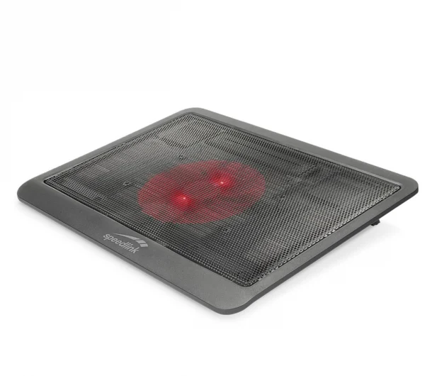
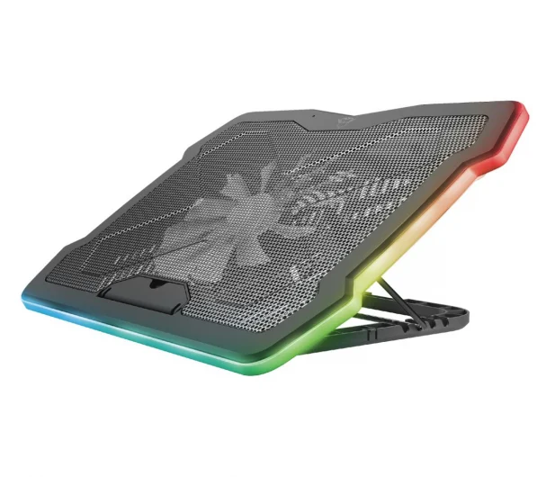
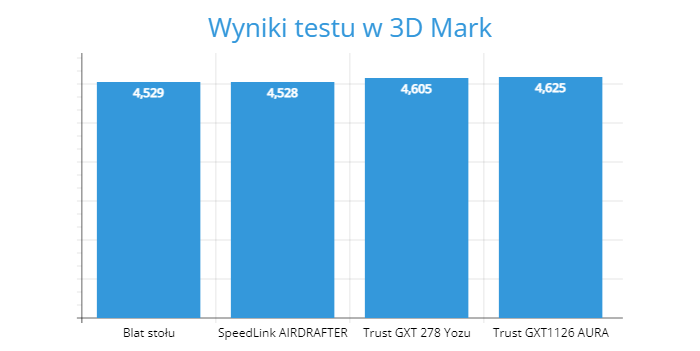

Test był przeprowadzany na 3 podkładkach
-Trust GXT1126 AURA 34,99zł
-Trust GXT 278 Yozu 89,99zł
-Trust GXT1126 AURA 229zł
-Jednostką testową był laptop Acer Triton 500
Opis podkładek
SpeedLink AIRDRAFTER
-brak regulacji obrotów
-podświetlenie led
-pojedyńczy wentylator 120mm
-prędkość obrotowa 1000obr./min.
-maksymalny rozmiar laptopa - 15"

Trust GXT 278 Yozu
-strefowa regulacja obrotów
-podświetlenie led
-cztery wentylatory 120mm
-prędkość obrotowa 1300obr./min.
-maksymalny rozmiar laptopa - 17,3"
Trust GXT1126 AURA
-regulacja obrotów
-podświetlenie led RGB
-pojedyńczy wentylator 200mm
-maksymalna prędkość obrotowa 700obr./min.
-maksymalny rozmiar laptopa - 17,3"

